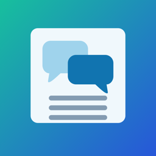
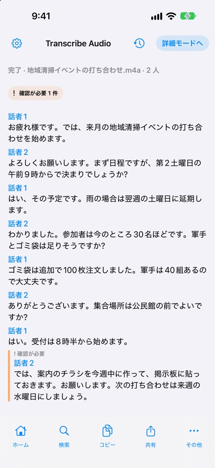
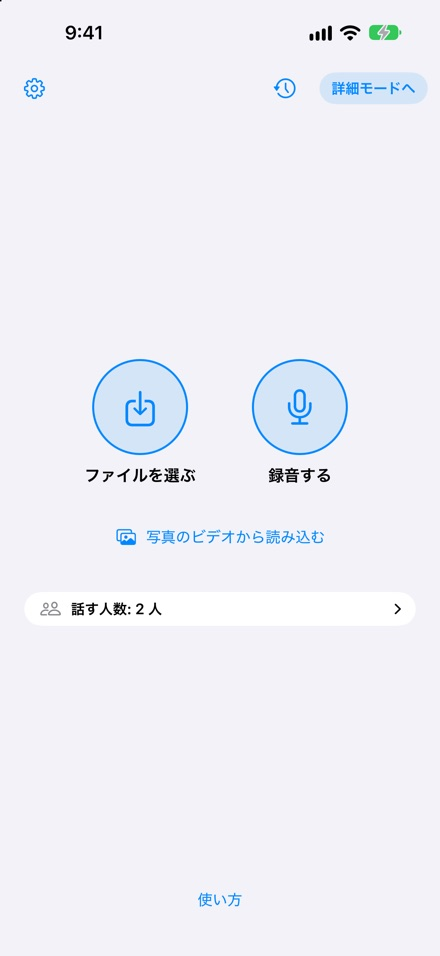
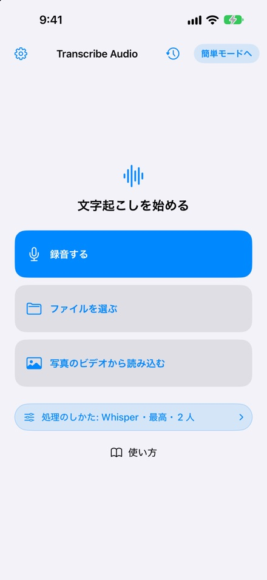
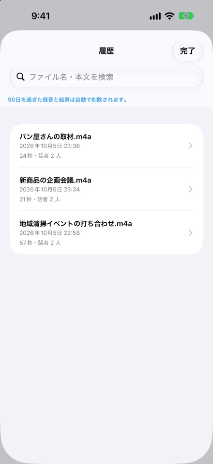

録音・文字起こし・話者の聞き分け
録音や音声ファイルを，iPhone・iPad の中で文字起こしするアプリである．話す人の聞き分けから，確認・手直し，共有までをひとつのアプリで行える．会議や打ち合わせ，インタビュー，講義，取材の記録に向く．




その場で録音するか，音声ファイルやビデオ（ファイル App・写真）を読み込むと，端末の中で文字起こしする．音声認識のモデルはアプリに含まれており，ログインも要らない．
「話者1」「話者2」のように話す人ごとに分けて表示する（1人／2人／3人以上を選べる）．聞き分けに自信のない所は「確認が必要」として示すので，見直す場所がすぐ分かる．名前は後から付け替えられる．
区間ごとに元の音声を聞き直しながら本文を直せる．本文の中を検索でき，コピーや共有のほか，テキストや Markdown で書き出せる．人名や用語を辞書に登録して表記をそろえられる．
画面がロックされても録音を続ける．録音の長さに制限はない．文字起こしは Whisper で 4 時間まで，話す人の聞き分けは 60 分までの音声に対応する．iOS 26 以降では，詳細モードで録音しながら文字を表示できる（ライブ文字起こし）．
はじめは簡単モード．ボタンは「ファイルを選ぶ」と「録音する」，選ぶのは話す人数だけである．詳細モードでは，文字起こしの方式や品質を選べる．
文字起こしは履歴に残り，ファイル名や本文で探せる．保存期間を選ぶと，古い録音と結果を自動で整理する．Face ID 等でアプリにロックをかけられる．